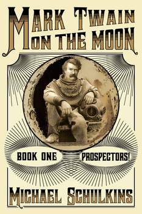

Mark Twain on the Moon
A bestseller in Amazon's Steampunk and Alternate History categories!
“Right from the the first paragraph the reader is drawn into a time and setting (though exotic) that will be familiar to any fan of Mark Twain. The book follows the same easy style of description, banter, and wit as most of the protagonist's best novels. A thoroughly engrossing and refreshingly different story.
Michael Schulkins leaves me asking, has a new Mark Twain adventure been discovered in a trunk somewhere?”
Mark Twain on the Moon Quotes

Book One: Prospectors!
In an alternate 19th century, young Samuel Clemens sets out for the mining camps of America’s wildest frontier: the Moon. Travel with Sam and his partner Calvin as they venture into the desolate, deadly wastes of the Mare Imbrium and the Montes Caucasus, in search of wonders, adventure, and a fortune in precious water ice.
This is Prospectors!, the opening salvo in the epic saga of Mark Twain on the Moon, as told by the alternate Mark Twain himself.
Book Two: The Deirdre
The amazing, perilous, sometimes hilarious adventures of Samuel Clemens on the Moon continue in The Deirdre, book two of the Mark Twain on the Moon saga.
At the end of book one, Prospectors!, Sam and his partner Calvin found themselves stranded in a remote crater, down to their last cylinder of air.
In book two, they are dramatically rescued by the men of The Deirdre, an ice mine on the crater’s rim, and forced into indentured servitude, digging for ice deep under the surface of the Moon. But when the Deirdres jump a neighboring claim, and no-nonsense Calvin hears the cries of a long-dead miner on his radio, life inside the Moon turns deadly, and soon Sam needs all of his wits, and a six-gun, to keep himself and the Deirdres alive.Book Three: Home
Driven out by a violent band of claim-jumping miners, Sam Clemens and his partner Calvin strike out into unexplored Lunar territory - and now they're heading the expedition! But when disaster threatens their former colleagues, the Clemens-Bemis Expedition must take on refugees. With supplies running short and dissent rising, is mutiny over the all-too-close horizon?
Then Sam encounters the impossible: an unknown girl in a pressure suit, who manages to save his life, introducing him to the mysterious cavern dwellers of Home. The "young sirs" of the Expedition are treated royally by the Whoa and Earls of Home, but their safe haven hides a terrifying secret that Sam must discover before it's too late.
Join Sam and Calvin, plus Perkins, Chalk and the former Deirdres as their harrowing, astonishing, sometimes hilarious adventures continue in Home, book three of the epic saga Mark Twain on the Moon.